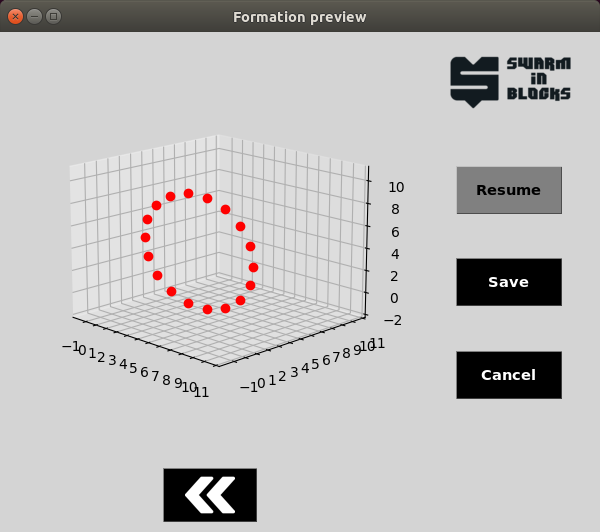
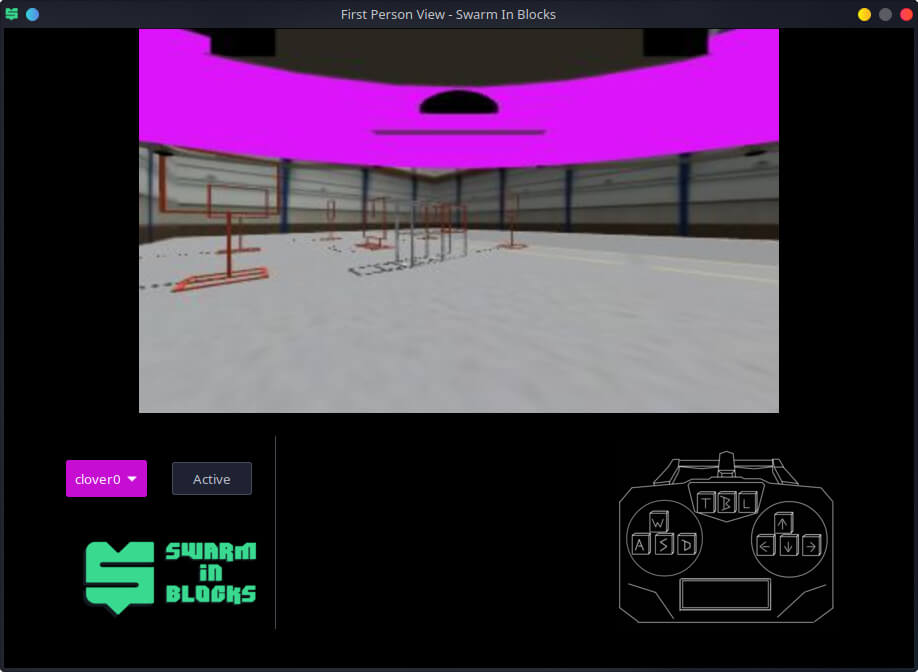

Swarm-in-blocks
Final Video
Detailed Gitbook
Check our Gitbook, with the detailed information about all that was developed by Atena Team during CopterHack 2022: https://swarm-in-blocks.gitbook.io/swarm-in-blocks/introduction/swarm-in-blocks.
The Clover Platform was forked and adapted to work with swarms. The Swarm in Blocks project is a separated repository with all our swarm manipulation tools for clover. Link of the fork of the Clover Platform: https://github.com/Grupo-SEMEAR-USP/clover . Link of the Swarm in Blocks repository: https://github.com/Grupo-SEMEAR-USP/swarm_in_blocks .
Introduction
Nowadays, swarms of drones are getting more and more applications and being used in several different areas, from agriculture to surveillance, and rescues, but controlling a high amount of drones usually isn't a simple task, demanding a lot of studies and complex software. Swarm in Blocks was born looking to make a high-level interface based on the blocks language, to make simple handling swarms, without requiring advanced knowledge in all the necessary platforms, creating tools to allow a lot of applications based on the user needs and also using the Clover platform, which has a lot of advantages as being complete and intuitive, supporting all the project goals.

Usability
How it works
The Swarm in Blocks can be programmed either with the blocks interface or directly in Python and we developed three main launch modes, each one focused on a different application of the project, they are:
- Planning Mode: Its main goal is to allow the user to check the drones' layout, save and load formations, before starting the simulator or using real clovers. In order to need less computational power and avoid possible errors during the simulation.
- Simulation Mode: In this mode happens the simulation indeed, starting the Gazebo, the necessary ROS nodes and some other tools. It allows applying the developed features, which will be explained ahead and see how they would behave in real life.
- Navigation Mode: The last mode will support executing everything developed in real clovers so that it's possible to control a swarm with block programming. The biggest obstacle yet is the practical testing of this mode, due to the financial difficulty to afford a Clover swarm.
Blocks Interface
The entire Swarm in Blocks project was designed so that the user was in an intuitive and comfortable environment within the manipulation of swarms, for this, the existing platform with clover packages was completely rethought and adapted. In our gitbook, we have more details about the front-end design, how the user can interact with it, and achieve our main goal: programming in blocks.

Features
Along with the project, we developed some features, that can be used together or independently and also serve as base for the implementation of more specific and advanced innovations. Here are the list and a brief explanation of each tool, to see more details and instructions about their use, check our gitbook!
Formations: There are some types of formation that were developed in order to create figures and other images, for uses in engineering and spectacles. They are:
- 2D Formations: We made functions to generate some simple geometries, allowing the user to set the number of clovers used and the size of the figure, the geometries options made until now are circle, empty square, full square and triangle.
- 3D Formations: Besides the 2D figures, there are also some simple 3D geometries, which are cube, sphere, and pyramid.
- Alphabet: There is also the option to generate letters and words, using our Clover swarm.
- 3D Figures: Lastly, we have the alternative to make other more complex 3D formations, for this we use a library called Open3D that deals with 3D data, allowing the drones to create any 3D image the user inputs since it's in the supported formats.
Transformations: In addition to creating the formations, it's important to give the option of editing their disposition, so some operations were developed. It also makes possible to execute more complex actions and activities with the Clovers. The transformations operations are:
- Scale: Changes the distance between the drones, increasing or decreasing the image.
- Translate: All the drones move the same distance in the chosen directions.
- Rotate: The formation rotates around a determined axis.

- LED effects: Enjoying the LEDs included in the Clover, we made some functions to apply effects in all the swarm, creating figures and operations with the LEDs too.

- Swarm Preview: The main goal of this feature is to help the user to visualize how the swarm will behave in the simulation or real life, without using a lot of computational power and avoiding some problems in the simulation. This way a 2D or 3D image illustrating the drones' disposition can pop up on the screen when using this function.

- First Person View (FPV): The FPV node makes it a lot easier to visualize each drone's camera individually and also control each one of them at a time using keyboard bindings.

All these features can be very useful for some applications and also be attractive to arouse the curiosity of the general public.
Conclusion
Over the last months we studied a lot, grew, and surpassed our limits, trying to explore some swarm applications, all to deliver the best possible project: Swarm in Blocks. Our motivation was to facilitate such a complex task as the manipulation of swarms of drones, through block programming, and it delighted us a lot and we hope it will fascinate all our users. We tried to resume all the project and its features in this article, but as there are many details and needed explanations, it was made a gitbook, to explore them for those who are interested.
For us, the results achieved were very expressive and positive, however, we believe that there is still room for improvement in the project, both considering the robustness of the swarm and the simplification of the usability of our platform. Improvement in the collision avoidance system, implementation of more formations and tests in real Clovers are some of the points that we hope to develop in future opportunities.
Finally, we thank the entire COEX team that made it possible for CopterHack 2022 to take place and all the support given during the competition. We are Atena Team, creator of the Swarm in Blocks platform and we thank you for your attention!